Steel Manufacturing Defects
A deep learning project that looks at a picture of a steel surface and tells you whether it is defective. Three models were trained and compared, and the best one powers a Streamlit classifier inside a Django website. Built as a B.Tech project by a team of three and published as a research paper at ICETS 2025.
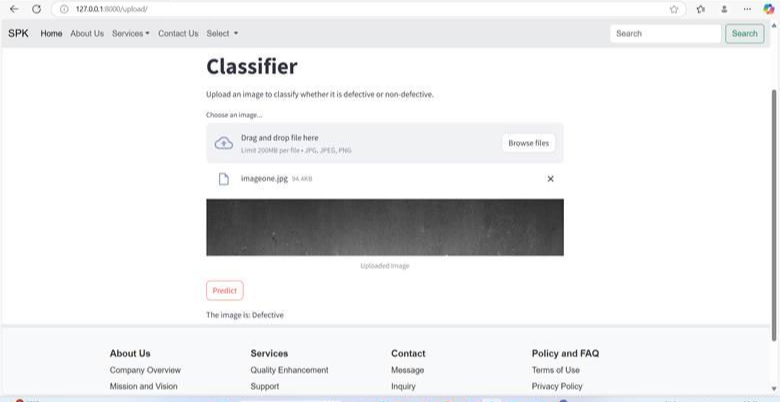
At a glance
The Project in Numbers
The problem
Why It Exists
Steel is made under changing conditions: different raw materials, different processes and a changing environment. That is how flaws such as cracks, inclusions and uneven thickness creep in. If they are caught late, a whole batch can be wasted.
Manual inspection is slow
People checking steel by eye cannot keep up with a busy production line.
Small flaws get missed
In our paper, traditional manual inspection had less than 70% accuracy, so tiny defects slip through.
Problems are found too late
A defect found after delivery means rework, rejected products and unhappy customers.
Waste adds up
Every bad batch wastes material, energy and time, which hurts both profit and the environment.
What it does
How It Works
The idea is simple: show the classifier a picture of steel and let it do the inspecting.
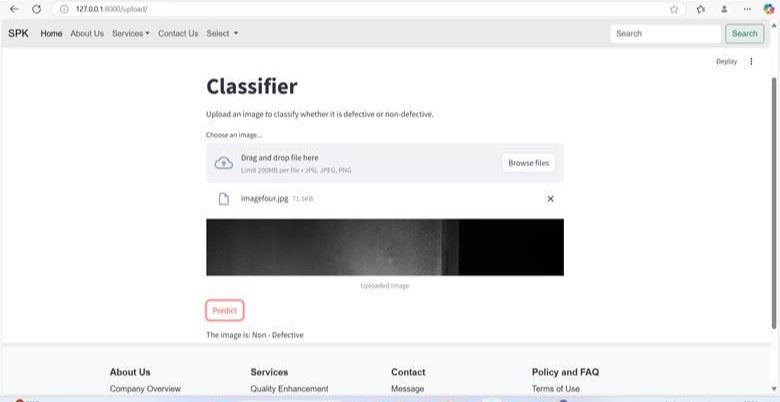
Step 1 and 2
Upload and Get a Clear Answer
Is this steel good or bad?
The classifier page is built with Streamlit. Drag in a photo of a steel surface, press Predict, and it replies with a plain answer: defective or non-defective.
- Accepts JPG, JPEG and PNG images
- The answer appears right below the image
- Behind the scenes it uses the trained ResNet50 model
The website
A Django Website With a Streamlit Classifier
The project is a small website built with Django, which handles sign-up, login, the information pages and the contact form, with a SQLite database behind it. The classifier page you saw above is a Streamlit app that sits inside the site.
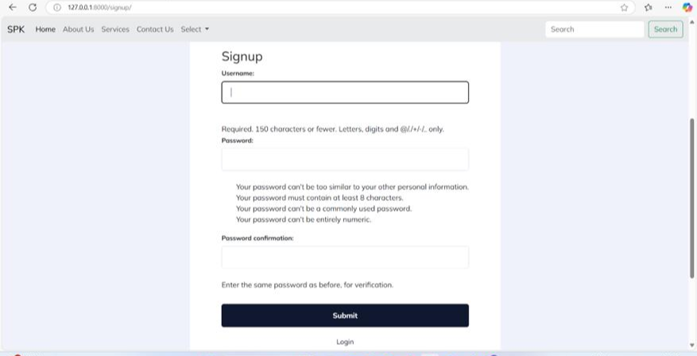
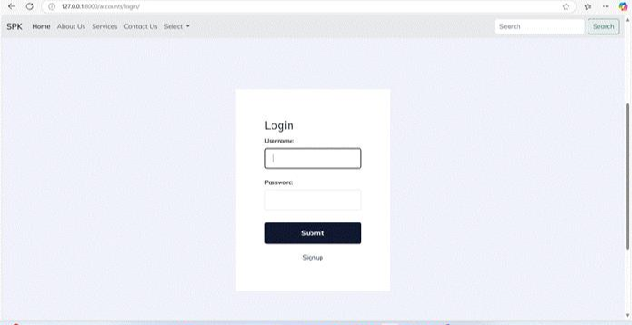
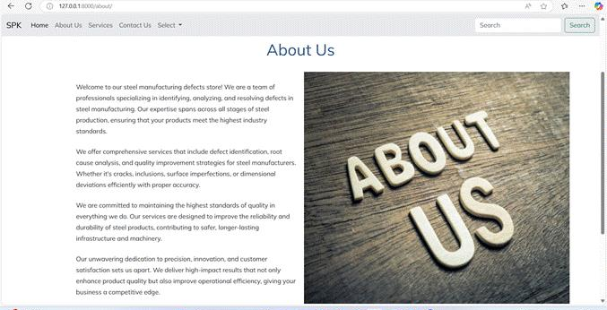
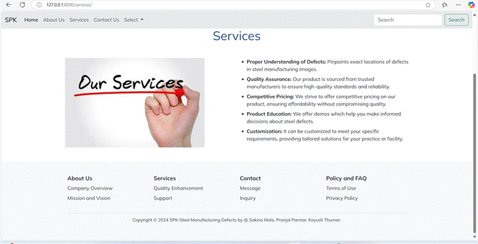
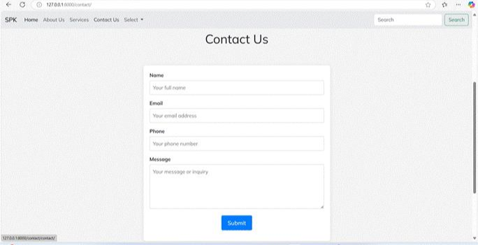
The models
Three Models, Three Jobs
Instead of betting on one approach, the team trained three different deep learning models on the same images and compared them. Each is described below, with its test results. "Group 0" and "Group 1" are the two classes the models learned to separate.
CNN (Convolutional Neural Network)
The balanced all-rounder
A CNN is the classic way for a computer to recognise images. Its first layers pick out simple things like edges and textures, its middle layers combine them into bigger patterns, and its last layers decide which group the image belongs to.
- Used as the benchmark model: simple, fast and dependable
- Scores were similar in both groups, so it does not lean toward one answer
- Can be outperformed by deeper models on very subtle patterns
| Group | Precision | Recall | F1 score | Images tested |
|---|---|---|---|---|
| 0 | 0.88 | 0.84 | 0.86 | 879 |
| 1 | 0.87 | 0.90 | 0.89 | 1,071 |
ResNet50 (Residual Network, 50 layers)
The most accurate model, used in the website
ResNet50 is a 50-layer network with shortcut connections, so information can skip ahead instead of getting lost in a very deep stack. It starts from a version already trained on millions of everyday photos, then learns what steel defects look like on top of that.
- Handles noisy images and complicated surface textures well
- The Streamlit classifier loads this model to give its answer
- Photos are resized to a fixed size and scaled before the model sees them
| Group | Precision | Recall | F1 score | Images tested |
|---|---|---|---|---|
| 0 | 1.00 | 0.73 | 0.84 | 882 |
| 1 | 0.82 | 1.00 | 0.90 | 1,054 |
ResUNet (Residual U-Net)
The model that draws the defect area
ResUNet joins two ideas. A ResNet half studies the image and collects what matters, and a U-Net half rebuilds the picture at full size, so the output is a mask that paints over the defective area. Defect locations were stored in a compact format called Run Length Encoding.
- Built for outlining defects, not just giving a yes or no
- Leans toward catching defects, which is why its recall is high for group 1
- Its lower overall score reflects that different job
| Group | Precision | Recall | F1 score | Images tested |
|---|---|---|---|---|
| 0 | 0.90 | 0.52 | 0.66 | 1,178 |
| 1 | 0.71 | 0.95 | 0.81 | 1,422 |
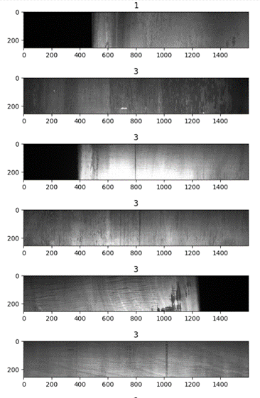
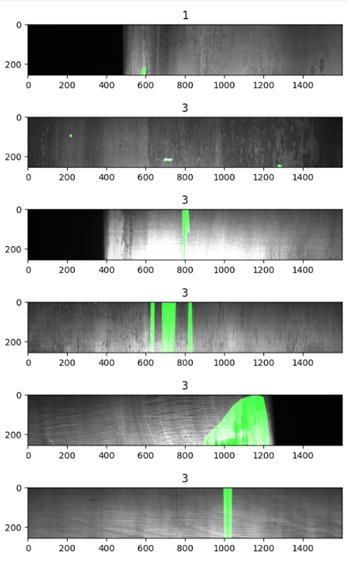
Reading the scores
What the Numbers Mean
Four simple measures were used to judge each model.
Accuracy
Out of all images, how many were labelled correctly.
Precision
When the model says "defective", how often it is right.
Recall
Out of all truly defective images, how many the model caught.
F1 score
A single score that balances precision and recall, useful when one group has fewer images than the other.
Results
How Well Does It Work?
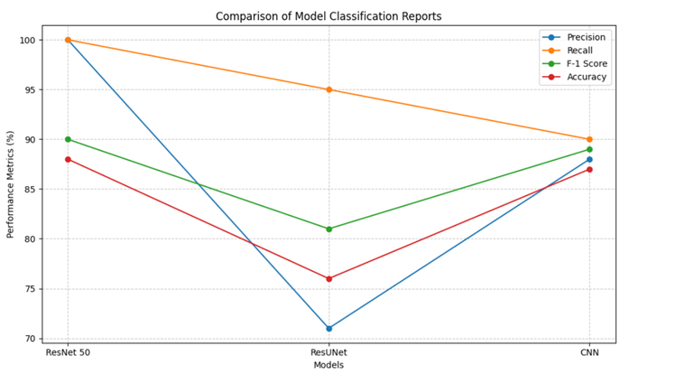
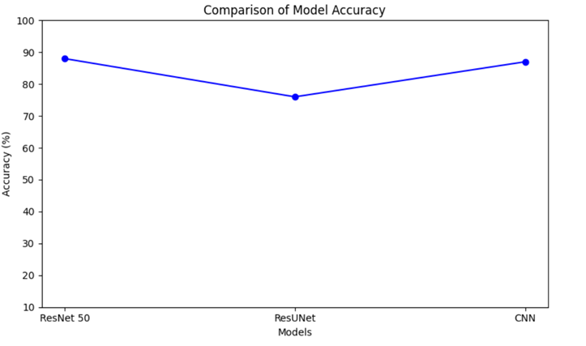
Architecture
How the System Fits Together
The project follows one path from raw images to a decision a manufacturer can use. Images are collected, prepared, sorted by the models, and the result goes to the manufacturer.
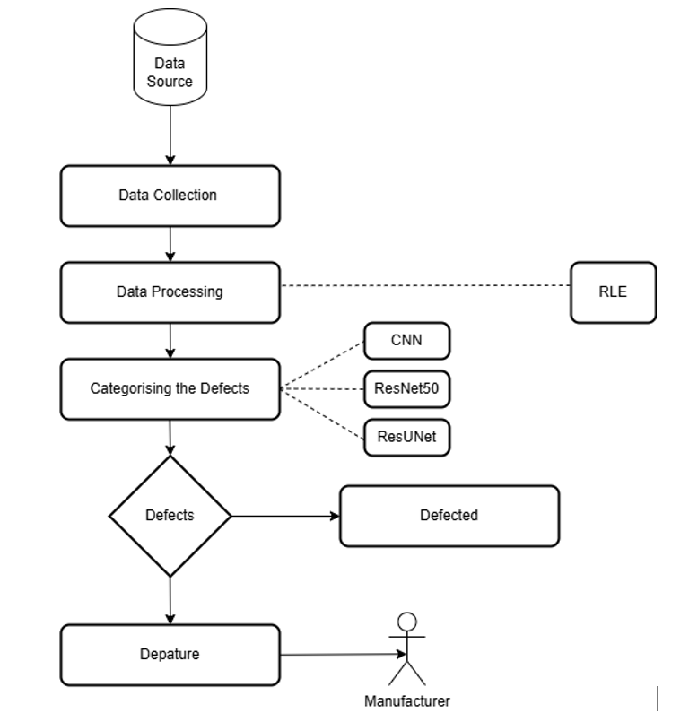
Three more diagrams, each explained below, show the same system from different angles.
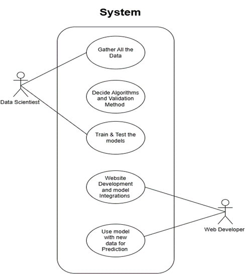
Diagram 2
Who Does What
Which roles built the system?
Two roles shared the work. The data scientist gathers the data, decides the algorithms and how to validate them, and trains and tests the models. The web developer builds the website, connects the finished model to it and uses it on new data.
- Data scientist: data, algorithms, training and testing
- Web developer: website and model integration
- Together they turn a trained model into a working web app
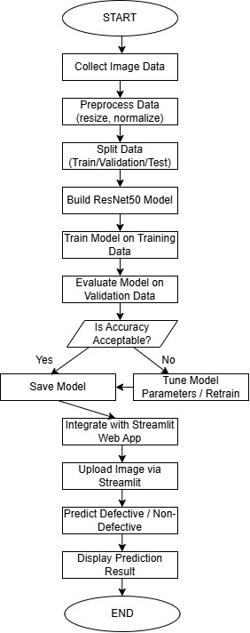
Diagram 3
The Workflow
What happens, step by step?
The workflow starts with collecting and preparing images, then splitting them for training, validation and testing. ResNet50 is built and trained, and its accuracy is checked. If the accuracy is not good enough, the model is tuned and retrained. Once it passes, it is saved and connected to the Streamlit app, where an uploaded image gets its prediction.
- Images are resized and normalised first
- A model is only saved once its accuracy is acceptable
- The saved model is plugged into the Streamlit classifier
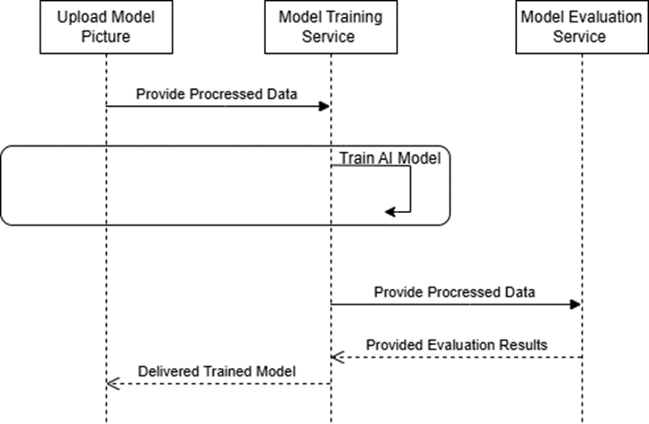
Diagram 4
Training and Delivery
How does a model get trained and handed over?
A picture is uploaded and the processed data goes to the training service, which trains the model. The data then goes to the evaluation service, which scores it and sends the results back. Only then is the trained model delivered.
- Training and evaluation are separate steps
- Every model is checked before it is delivered
- The same flow lets the models be retrained with new data
The build journey
How It Was Built
From first reading to a published paper, in five steps over roughly ten months.
1. Collect the images
12,997 steel images, 7,095 with defects and 5,902 without. Most defective images had one defect, some had two, and one had three.
2. Prepare the images
Images were resized and normalised, and the data was split into training, validation and test sets.
3. Train three models
CNN, ResNet50 and ResUNet were trained, tuned and retrained until their accuracy was acceptable.
4. Check the results
Each model was tested on images it had never seen and compared on accuracy, precision and recall.
5. Build the website
A Django site was built around a Streamlit classifier that loads the ResNet50 model, with SQLite for stored data.
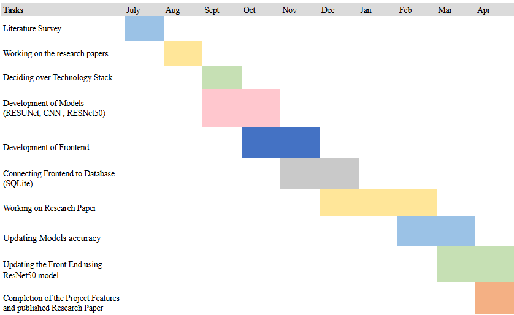
Why it matters
Impact
Catching defects early changes what happens on the factory floor.
Lower costs
Less rework, fewer rejected batches and less downtime.
Consistent quality
Every image is checked the same way, so only good steel reaches customers.
People do higher-value work
Skilled staff move from repetitive checking to improving the process.
Less waste
Early detection means less wasted material and a smaller carbon footprint, supporting sustainable manufacturing.
Keeps improving
The models can be retrained with new production data so they stay accurate over time.
Ready to grow
Built from free, open-source tools, so it can scale to more production lines and higher-resolution images.
Under the hood
Tech Stack
Python
TensorFlow
Keras
PyTorch
OpenCV
ResNet50
ResUNet
CNN
Streamlit
Django
SQLite
Google Colab
Built by Sakina Mala, Pranjal Parmar and Keyush Thumar as a B.Tech (Information Technology) project at K. J. Somaiya Institute of Technology, University of Mumbai (2024-25), under the guidance of Dr. Mansing Rathod. The work is also published as "Automated Detection of Steel Manufacturing Defects Using Machine Learning Techniques" at ICETS 2025.